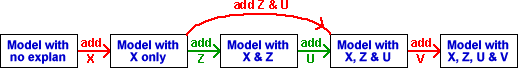

Grouping explanatory variables
We have described sequential sums of squares when explanatory variables are added one at a time to the model. In some examples, it makes sense to group some explanatory variables together and consider them as an indivisible unit. For example, the diagram below shows how two explanatory variables, Z and U, might be grouped.

The sequential sum of squares for such a group is simply the sum of the sequential sums of squares of the individual variables, and its degrees of freedom are the number of variables.
Effect of ancestors on height
Data were collected from a random sample of men who had lived in mountain isolation for several generations.
| Response | |||
|---|---|---|---|
| Height | Y | Height at age 18 (inches) | |
| Explanatory variables | |||
| Birth | B | Length at birth | |
| Mother | M | Mother's height at age 18 | |
| Father | F | Father's height at age 18 | |
| Grand 1 | Mm | Maternal grandmother's height at age 18 | |
| Grand 2 | Mf | Maternal grandfather's height at age 18 | |
| Grand 3 | Fm< | Paternal grandmother's height at age 18 | |
| Grand 4 | Ff | Paternal grandfather's height at age 18 | |
In these data, we would be interested in the influence of the parents' and grandparents' heights on the heights of the men, so it is reasonable to form a group with the two parent heights and another with the heights of the four grandparents.
Click the checkboxes Combine parents and Combine grandparents to add their sequential sums of squares and degrees of freedom.
Reordering variables
In the sum of squares table below, the three groups of variables can be reordered.
Since the data are observational, the explanatory variables are correlated, so the sums of squares associated with the three groups depends on the order of adding them to the model.
Observe that the grandparents' heights explain a lot of the variation if they are the first group of variables in the model, but explain little additional variation after taking account of the parents' heights.